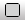

Painting on Tilemaps
The following details the steps and tools for painting Tiles on a Tilemap. However, if you are painting an Isometric Tilemap, refer to Creating a Tile Palette for an Isometric Tilemap for specific steps and information.
To begin painting Tiles, select the Tilemap you want to paint on from the Active Tilemap drop-down menu in the Tilemap Palette window. Tilemaps created in the Scene’s hierarchy are automatically added to the drop-down menu. Only the currently selected Active Tilemap is affected by the Tile Palette painting tools.

Tilemap painting tools are found in a row at the top of the Tile Palette window. These tools can also be used to edit the Tile Palette itself.

Painting Tool Shortcuts
| Tool | Shortcut Key |
|---|---|
 Select Tool Select Tool
|
S |
 Move Tool Move Tool
|
M |
 Paintbrush Tool Paintbrush Tool
|
B |
|  Box Fill Tool | U |
 Picker Tool Picker Tool
|
I While using the Brush Tool or Box Fill Tool, hold Ctrl (Command on macOS) to temporarily switch to this Tool. |
 Eraser Tool Eraser Tool
|
D While using the Brush Tool or Box Fill Tool, hold Shift to temporarily switch to this Tool. |
 Fill Tool Fill Tool
|
G |
Select Tool
Use the Select Tool to select a Tile on the Active Tilemap or hold and drag over multiple Tiles to select more at once. The property details of selected Tiles are shown in the Inspector Window. Use the Move Tool to move selected Tile(s) to a different position on the Tilemap.
Move Tool
Use the Move Tool to move the Select Tool’s Tile selection (the Move Tool cannot select Tiles itself). Hold and drag selected Tiles to another position on the Tilemap.

Paintbrush Tool
Use the Paintbrush Tool to select a Tile in the Tilemap Palette, or hold and drag over multiple Tiles to select more at once. Then click on any location on the Tilemap in the Scene to begin painting with your selected Tiles. Hold Shift while using the Paintbrush Tool to switch to the Erase Tool.
To select and paint with Tiles that are already on the Tilemap instead of the Tilemap Palette, hold Ctrl as you select Tiles on the Tilemap with the Paintbrush Tool. This briefly switches it to the Picker Tool to select the Tiles for painting.
Box Fill Tool
Use the Box Fill Tool to select a Tile in the Tilemap Palette, or hold and drag over multiple Tiles to select more at once. Selections made with the other painting tools are also valid. Hold and drag the Box Fill Tool over the Tilemap to draw a rectangular shape which fills with the selected Tile(s.)
Picker Tool
Use the Picker Tool to pick a Tile from the Tilemap or Tilemap palette; hold and drag over multiple Tiles to select more at once. The active tool switches to the Paintbrush Tool once a selection is made, to allow you to paint immediately on the Tilemap with the selected Tile(s).
Erase Tool
Use the Erase Tool to erase Tiles from the Tilemap by selecting them while the tool is enabled. To erase a larger area at once, hold and drag the Erase Tool to the desired size in the Tilemap Palette, then paint over Tiles you want to delete on the Tilemap.

Fill Tool
The Fill Tool is used to fill a contiguous area of empty cells or identical Tiles with the selected Tile. Select the Tile to use as the Fill by selecting it from the Tilemap Palette. This tool cannot be used with multiple Tiles.
瓦片地图焦点模式
Use the Tilemap Focus mode to focus on a specific Tilemap or Grid GameObject, and fade out other GameObjects in the Scene. This is useful when working with mutilple Tilemap layers to avoid confusion and clutter.
First select the target Tilemap from the Active Target dropdown in the Tilemap Palette window or from the Hierarchy window. The Tilmap Focus On dropdown menu is found at the bottom right of the Scene View.
Select the Focus On target from the options in the dropdown menu:
| Target | 功能 |
|---|---|
| None | No target is selected. |
| Tilemap | The selected Tilemap GameObject is focused. All other GameObjects are faded. Select this option to focus solely on a single Tilemap layer. |
| Grid | The parent Grid GameObject and all its children is focused. All other GameObjects are faded. Select this option to focus on the entire Tilemap with all layers as a whole. |
Active Brush inspector
The Active Brush Inspector is at the bottom of the Tile Palette window. It allows you to change the current active Brush and its properties. This is minimized by default. To expand it, drag the bottom toolbar upwards.

Use the drop-down menu to change the active Brush from the Default Brush to other Brushes you have in the project, such as Scriptable Brushes.
Brush preview and other shortcuts

When painting the Tilemap in the Scene view with the active Brush, a preview of the picked Tile(s) is shown at the cursor location. This is the Brush preview that helps you to visualize the placement of the Tiles before painting. Brush previews with multiple Tiles may look different when the cursor hovers over neighboring rows or columns. This is more pronounced on Hexagonal Tilemaps.
The following shortcuts allow you to change the orientation or z-position of the picked Tile, which is visually reflected in the Brush preview.
| Shortcut Key | 功能 |
|---|---|
| [ | Rotate the active Brush clockwise. |
| ] | Rotate the active Brush anti-clockwise. |
| Shift + [ | Flip the active Brush along the x-axis. |
| Shift + ] | Flip the active Brush along the y-axis. |
| - (Available when Can Change Z Position is enabled) | Increase the z-position of the active Brush. This is only available when Can Change Z Position is enabled for the active Brush. |
| = (Available when Can Change Z Position is enabled) | Decrease the z-position of the active Brush. This is only available when Can Change Z Position is enabled for the active Brush. |